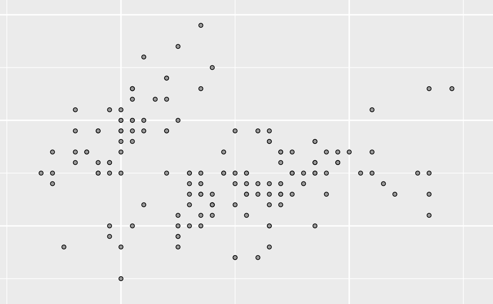
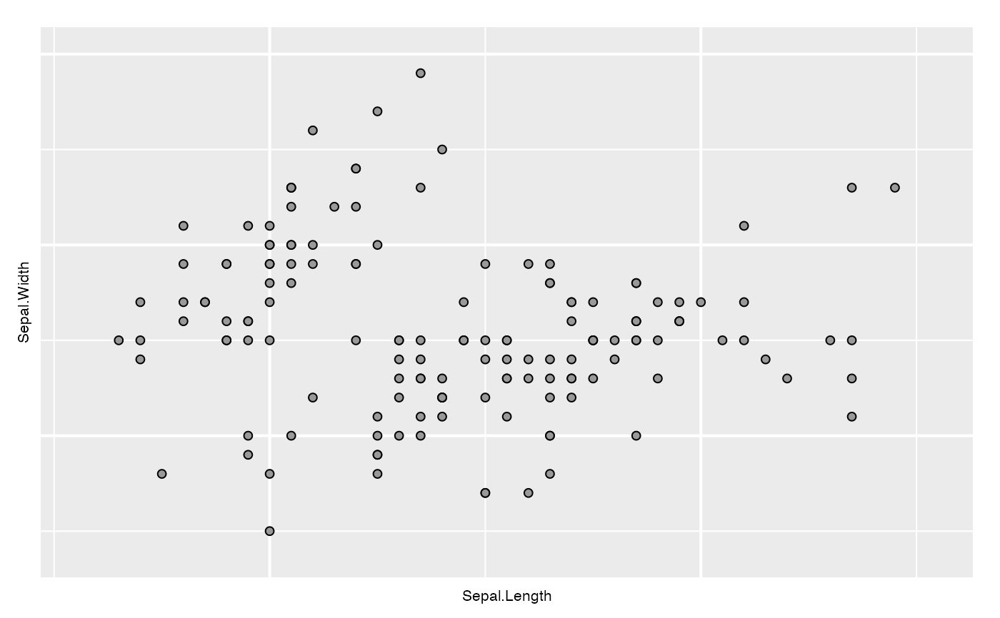
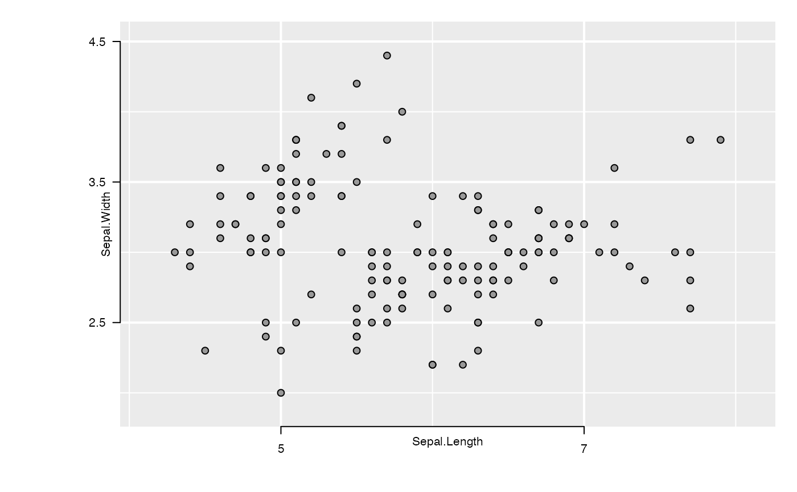
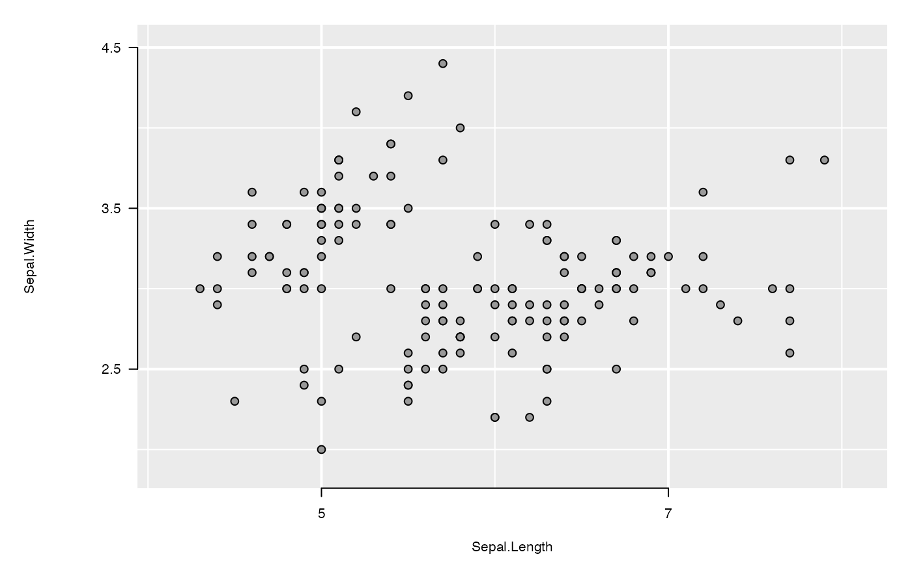

Functions used to
instantiate grob descriptions appearing in the gTree produced
by loonGrob().
l_updateGrob(grobDesc, grobFun, ...) l_instantiateGrob(loonGrob, gPath, grobFun, ...) l_setGrobPlotView(loonGrob, margins)
Arguments
| grobDesc | A grob description. Generally, it is created by the
function |
|---|---|
| grobFun | A new grob function. If missing,
a best guess (based on |
| ... | arguments used to set in the new grob function |
| loonGrob | A loonGrob (a |
| gPath | A |
| margins | plot view margins. If missing, a loon default margin will be used. |
Details
l_updateGrob: query arguments from a grob description and assign these arguments to a new grob function.l_instantiateGrob: query a descendant from aloonGrob, update it via a new grob function, then return the new edittedloonGrob
See also
Examples
library(grid) grobDesc <- grob(label = "loon", gp = gpar(col = "red")) grid.newpage() # Nothing is displayed grid.draw(grobDesc)textDesc <- l_updateGrob(grobDesc, grid::textGrob) grid.newpage() # label "loon" is shown grid.draw(textDesc)# a loon plot with hidden labels p <- l_plot(iris, showLabels = FALSE) lg <- loonGrob(p) # x label and y label are invisible grid.newpage() grid.draw(lg)# show x label lg <- l_instantiateGrob(lg, "x label: textGrob arguments") # show y label lg <- l_instantiateGrob(lg, "y label: textGrob arguments") # reset margins lg <- l_setGrobPlotView(lg) grid.newpage() grid.draw(lg)# show axes if(packageVersion("loon") < '1.3.8') { lg <- l_instantiateGrob(lg, "x axis: .xaxisGrob arguments") lg <- l_instantiateGrob(lg, "y axis: .yaxisGrob arguments") } else { lg <- l_instantiateGrob(lg, "x axis: xaxisGrob arguments") lg <- l_instantiateGrob(lg, "y axis: yaxisGrob arguments") } lg <- l_setGrobPlotView(lg) grid.newpage() # the labels are too close to the plot grid.draw(lg)# reset the labels' positions lg <- l_instantiateGrob(lg, "x label: textGrob arguments", y = unit(-3.5, "lines")) lg <- l_instantiateGrob(lg, "y label: textGrob arguments", x = unit(-6.5, "lines")) grid.newpage() grid.draw(lg)